课程工作人员
授课教师

Justin Yokota 他
大家好！我是 Justin（他/他），这学期 61B 和 61C 的联合授课教师之一。作为本科生，我修了数学和计算机双专业，并在并行计算项目中完成了五年制硕士项目（都在伯克利完成）。此外，我还担任了九个学期的助教，主要专注于考试命题。工作之外，我大部分时间都在玩《蔚蓝》（9D 太难了）和作为 BMT 和 teammate 的一员解谜/出谜。第一部分：字面意义上对零食的警惕过度支付，但薯条警告诈骗。泡沫蛤蜊？
Peyrin Kao
大家好，我是 EECS 的二年级讲师（所以请不要叫我教授）。我在伯克利完成了本科学习，曾担任过几门课程的助教（包括 CS 61C、CS 161 和一次 CS 188）。后来我在伯克利读了硕士，研究计算机科学教育，跟随 Nicholas Weaver 和 Dan Garcia 学习。这是我第二次作为联合授课教师教 CS 61B，所以任何反馈/建议/投诉都非常欢迎！
助教
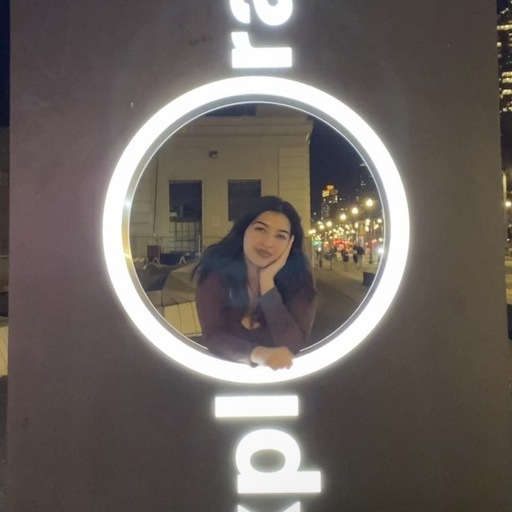
Abby Brooks-Ramirez 她
嗨嗨！我是大三学生，主修计算机科学，辅修民族研究。业余时间我喜欢阅读、买太多植物、听演唱会，还有在加州做空中运动健身！欢迎随时联系我，很高兴认识大家：）

Aditya Hariharan 他/h是
大家好，我是 Aditya，大二学生，主修计算机科学和商业。除了教学，我非常喜欢看体育比赛、早午餐、摄影、无限闲聊、励志名言、硬拉，还有尝试新事物。非常期待认识大家，欢迎随时联系我聊任何事情！
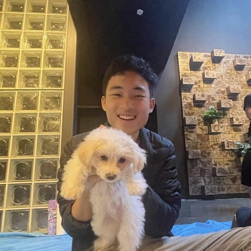
Allen Gu 他/h是
嘿哟！我是大四 EECS 专业，这是我第5次教 61B！我喜欢各种音乐、足球、排球和橘子。欢迎随时联系我聊任何事情！希望你在 61B 过得愉快：D


Angel Aldaco 他
你好！我是大四学生，主修计算机科学和政治科学，辅修新闻学！你通常会发现我戴着亮红色的 beats 耳机可能在听 Bowie 或者一些原声带。现在我正在读《明日之后》，但我也喜欢看《风骚律师》、《继承之战》和吉卜力的电影。我还非常喜欢弹钢琴和《超级银河战士》！我希望我能像数据结构对算法/项目那样对你有所帮助！所以欢迎随时联系我（特别是如果你有任何书籍电影电视剧人生建议的话）！
Anirudh Sreerama 他/h是
大家好！我是 Anirudh，来自湾区的数学和计算机科学专业的大二学生。业余时间，我非常喜欢玩电子游戏，比如《任天堂明星大乱斗》（卡比是最棒的）和《煮糊了》，特别是当我们作为团队合作的时候！我也非常喜欢在无聊时快速解数独和肯肯数独。这是我的第一个学期担任助教，所以我超级兴奋能与大家合作：）

Aniruth Narayanan he series
嘿！我是 Aniruth，来自佛罗里达的大四 EECS + 商科专业，但我可以说服任何人我是来自湾区。这是我在工作人员中的第4次（我觉得）。很乐意聊数据结构、职业或生活。我喜欢重温《尖峰时刻》和《十一罗汉》。我以前住在客厅但现在我有一扇门了
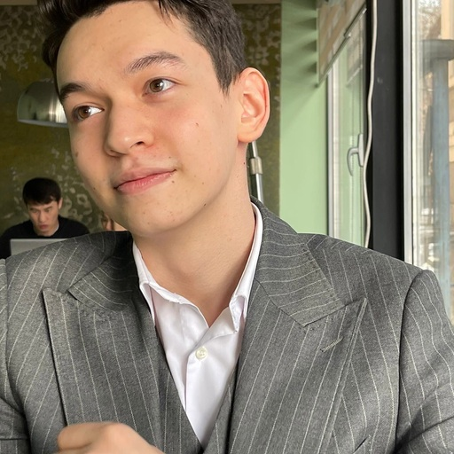
Anniyat Karymsak 他/h是
嗨！我叫 Anniyat，来自哈萨克斯坦的大三学生。除了教学，我非常喜欢看侦探片、 ballroom 跳舞，还有听 Frank Sinatra 的歌曲。说到食物，我（不健康地）痴迷于首尔热狗！

Ashley Kao 她/hers
嗨！我是 Ashley，来自加州尔湾的大三 EECS 专业。这是我在 61B(L) 工作人员中的第4次。我喜欢猫、冬瓜茶、公共交通、闪光宝可梦、被诅咒的数据结构，还有 61bees。期待认识大家！
Austin George 他/h是
哟，我是 Austin！我是大四计算机科学专业，这是我对 61B 的第三次助教经历。这门课绝对是我在伯克利最喜欢的课程，希望我能和大家分享这种热情。我喜欢跑步、徒步和非常辣的食物。在我讨论课上的第一条规则是，评判留在门外。让我们过一个美好的学期！：D
Ayati Sharma 她
嗨，我是 Ayati！我是来自印度的大三学生，主修计算机科学和语言学。这是我迄今为止最喜欢的课程，非常兴奋能再次教 61B！我非常喜欢阅读、音乐和学习艺术史和大脑。目前正在探索更多旧金山！随时欢迎联系我，期待认识大家：：D


Claire Lee She/her/hers
嗨！我是 Claire，大四计算机科学专业！这是我的第四次教 CS61B，我非常兴奋：）我喜欢尝试新事物、探索新咖啡馆和旅行。期待认识大家！
Cyrus Hung 他/h是
嘿！我是来自香港的大三计算机科学专业。我是一个超级美食爱好者，喜欢尝试新美食和在业余时间烘焙。我的其他爱好包括玩《大乱斗》、阅读和照顾我的6只猫和1只狗（当我回家的时候）。期待认识大家，随时联系我（特别是如果你想要宠物照片的话：D）
David Yang 他/h是
大家好！我的名字是 David，我是来自佛罗里达州塔拉哈西的大三计算机科学 + 语言学专业。业余时间，我喜欢攀岩、弹钢琴、跑步和 NYT 连线游戏。非常期待这个学期和认识大家！
Dhruti Pandya 她
嗨！我是 Dhruti，来自圣地亚哥的大四学生，主修 EECS。我喜欢打羽毛球、徒步（尤其是海边）、探索咖啡馆、尝试新食物，还有所有紫色的东西。欢迎随时联系我聊任何事情，61B 相关的或其他：）
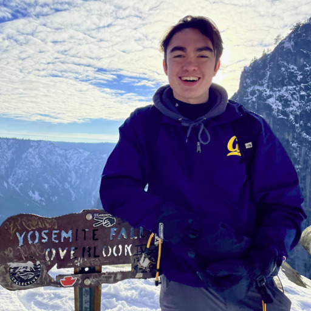
Dominic Conricode 他/h是
嘿大家！我的名字是 Dom，我来自萨利纳斯谷的计算机科学专业，这是我在 61Best 课程的第五个学期担任助教。我喜欢尝试新事物，在我在这里的时间里，我做过从拉丁舞到火箭工程到大学拳击的一切。也许你会看到我在校内排球场上非常努力，或者在我寻找最佳伯克利餐厅的使命中：）

Dylan Hamuy 他/h是
嘿哟我是 Dylan！我是 EECS 专业的大三学生，我非常兴奋能在这个学期支持大家一起度过 61B。我非常喜欢 61B，这是我的第四次教它。如果你们有任何关于任何事情的问题，随时欢迎联系我！我在这里提供帮助！

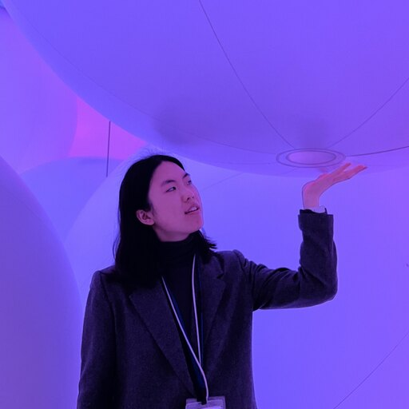
Elana Ho 她/hers
嗨！我是 Elana，大三学生，主修计算机科学和法语。除了担任助教，我还是 61B 的 CSM 高级导师顾问。当我不教数据结构和算法时，我喜欢绘画、学习新语言和看动漫。我非常兴奋认识大家，期待一个有趣的学期！欢迎随时联系我聊任何事情：3
Elisa Kim 她/hers
你好！！我是 Elisa，大三学生，主修 EECS。这是我的第三次教 61B，非常兴奋能和大家再次见面：我喜欢野餐，我最喜欢的电影是《驯龙高手》。欢迎联系我，很高兴认识大家！


Erik Kizior 他/h是
大家好！我是 Erik，大三 EECS 学生，我非常兴奋能在这个学期帮助教 61B。我喜欢排球、超级大乱斗和卡坦岛。随时给我发消息！

Erik Nelson he/they
嗨！我是大四计算机科学专业。我喜欢时尚、游戏、电影和去音乐会！我目前正在学习打碟，我还有加州的调酒师执照。欢迎联系我聊时装秀、虚拟现实、中西部选举政治或任何事情！
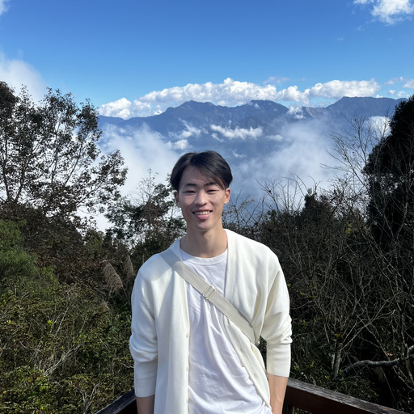
Ethan Lo 他/h是
嗨大家！我是来自戴维斯的大四计算机科学和音乐专业学生，这是我的第三次教 61B！我在加州大学伯克利分校打棒球，在 UCBSO 拉大提琴，我双胞胎姐姐声称我在子宫里吃了她的视神经。如果你有任何问题，随时联系我。迫不及待想认识大家！
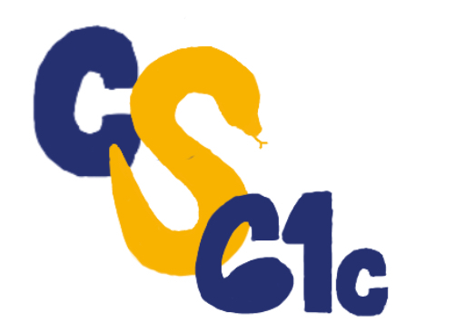

Kanav Mittal 他/h是
嗨！我的名字是 Kanav，我是大三 EECS 专业。我的兴趣在于机器学习、软件工程和计算生物学。业余时间，你可以在健身房锻炼、徒步 Fire Trails 或看情景喜剧时找到我。我也是泰勒·斯威夫特的超级粉丝：）。期待认识你！
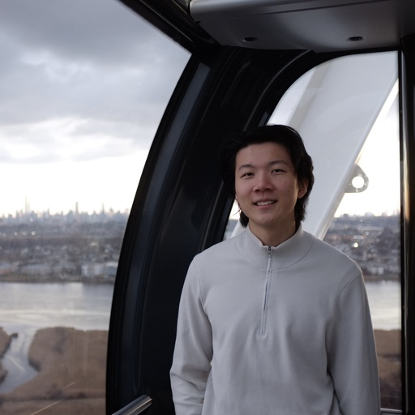
Kevin Sheng 他/h是
你好！我是 Kevin，来自南加州的大三计算机科学专业，这将是我第四次教 61B(L)。业余时间我喜欢学习游戏开发、烹饪和锻炼。欢迎问我任何问题，如果你碰到我一定要打招呼！
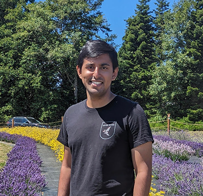
Meshan Khosla 他/h是
你好！我是来自中央山谷的大四计算机科学专业。这是我在 61B 工作人员的第五个学期，我有预感这将是最好的一学期。我是一个超级足球迷，总是乐意聊天。另外，如果课程的某些基础设施坏了……抱歉。希望在办公时间、实验和讨论课上见到你！
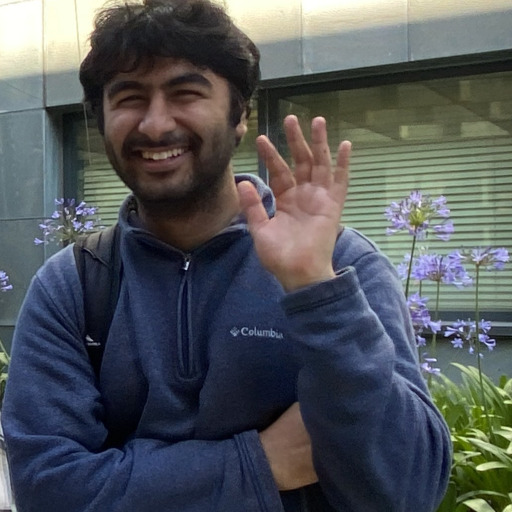
Mihir Mirchandani 他/h是
嗨 61B 伙伴们！我是 Mihir，来自加州山景城的大三计算机科学专业。我非常高兴能回到这门精彩而基础的课程的工作人员队伍中，这是我的第二个学期！业余时间，我喜欢下棋、弹钢琴和长途开车。期待与你们一起工作，度过一个有趣的学期！
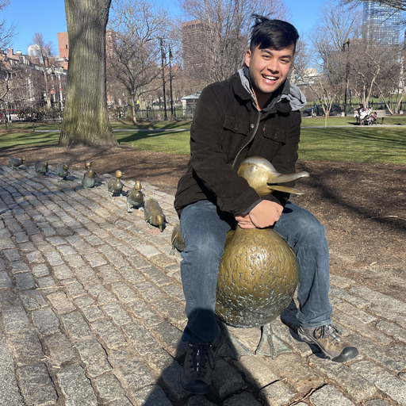
Noah Adhikari 他/h是
升级版！我是来自南加州南湾的大四学生，主修应用数学和计算机科学，这是我的第六次教 61B！你可以找到我在弹钢琴和吉他，也许偶尔还会唱歌。我也玩大量俄罗斯方块和炉石。非常兴奋认识大家！
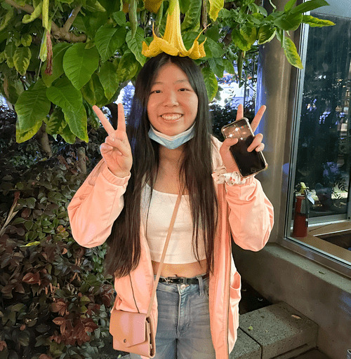
Olivia Huang 她/hers
哇嗨我是 Olivia，我是来自新泽西的大四计算机科学和认知科学专业！我是一个大 Kpop 迷，我喜欢弹钢琴、看韩剧、玩休闲游戏，我刚开始学钩针编织。如果你曾经在野外遇到我，10 次中有 9 次我手里会拿着一杯奶茶或抹茶。这是我在工作人员的第三个学期，期待一个很棒的学期！欢迎随时联系我聊天：）
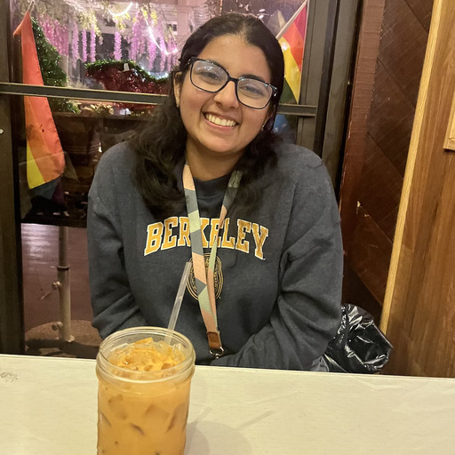
Ritika Joshi 她/hers
大家好！我是 Ritika，来自圣何塞。我是应用数学和计算机科学专业的大二学生。业余时间，我喜欢阅读、钩针编织和烹饪/烘焙新东西！我喜欢 CS 61B 这门课，很高兴能在这个学期帮助大家！:))
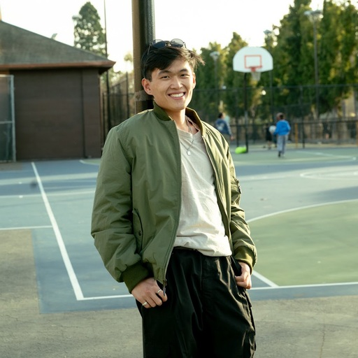

Ronnie Beggs 他/h是
大家好！！我是来自湾区的计算机科学和数据科学专业的大二学生。你可能会发现我在伯克利周围徒步、健身房锻炼，或者尝试城里的每一家餐厅。61B 是我最喜欢的课程，希望我能为大家培养同样的体验！让我们过一个精彩的学期！！
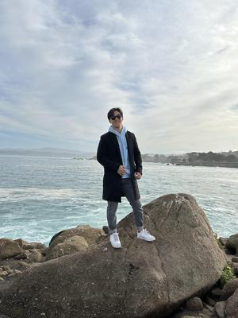
Royce Ren
嗨！我是 Royce，目前是计算机科学专业的大二学生！当我不痴迷于并查集和 61B 时，你可以找到我在看动漫、玩英雄联盟（抱歉）、去健身房和在 YouTube 上浪费太多时间。非常期待一个很棒的学期：）

Sahityasree Subramanian 她/hers
嗨！我的名字是 Sree，我是大三计算机科学专业。这是我第二次教 61B，这是我在伯克利最喜欢的课程之一——希望你和当时的我一样喜欢它：）业余时间，我喜欢写作、徒步和看电影，最近我在学钩针编织。欢迎随时联系我，很高兴认识大家！

Sophie Nazarian 她/hers
嘿大家！我是 Sophie，我是大三学生，主修生物工程和计算机科学。这是我在工作人员的第四个学期，但这是我第一次担任助教：）我喜欢看体育比赛、徒步和在玩电子游戏时对着屏幕尖叫。我非常兴奋能教我最喜欢的计算机科学课程，我喜欢能启发大脑的问题，所以欢迎随时联系我聊任何事情！
Teresa Luo 她/hers
大家好：）我的名字是 Teresa，我是一名大三学生，主修计算机科学和数据科学。我来自成都、北京和洛杉矶（帕洛斯弗迪斯），目前每天获取柯基和摩托车内容，学德语，阅读西方艺术史。这是我的第四次教 61B，期待与大家共度一个有趣的学期！

Vanessa Teo 她/hers
嗨！我是 Vanessa，来自湾区的大三学生，主修计算机科学和环境经济与政策。我喜欢钩针编织、和我的猫玩耍、制作和听各种类型的音乐。这是我的第四次教 61B（耶！），非常兴奋认识大家！随时欢迎联系我——我在这里提供帮助：）
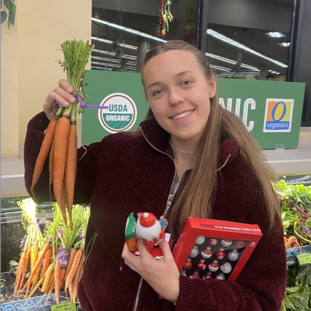
Vika Stukalova 她
victoria.stukalova@berkeley.edu
嗨！我是 Vika，我是大三计算机科学和数据科学专业。我的一些兴趣包括徒步、芭蕾和滑雪！当我不调试东西时，你可以找到我在伯克利或 Fire Trails 周围散步。伯克利有很多好的餐厅，但如果我必须选一个，我会说是 Lucia's（那里的披萨太好吃了）。关于我的一个有趣的事实是，我非常喜欢胡萝卜，身上总是至少有 3 件胡萝卜相关的东西。迫不及待想帮助教一些数据结构：）
William Lee 他/h是
嗨，我叫 William，来自马里兰的大四计算机科学专业（加油乌鸦！）。这是我的第三次教 61B。我喜欢在维基百科上深入历史研究、乘坐新的 BART 列车和听70-80年代的音乐。我非常兴奋能在这个学期与大家合作！
Wilson Fung 他/h是
大家好！我是大三计算机科学专业，有数据科学辅修。我在 2023 年春季选了 61B，现在第一次在课程工作人员中，非常兴奋能教大家！我刚进伯克利时是化学工程专业，后来换了7+次专业（哈哈哈）！业余时间，我喜欢探索新美食、在咖啡馆工作、打排球和拍视频博客！

Xifeng Li 他/h是
你好！我是 Xifeng，来自洛杉矶的大三计算机科学专业！我喜欢音乐、园艺、桌游、俄罗斯方块，当然还有 CS 61B！如果需要任何帮助，随时欢迎联系我：）
辅导员

Alyssa Smith 她/hers
大家好！我是大三计算机科学 + 数据科学专业，这是我在 61B(L) 课程工作人员的第三次！除了 61B，你还可以在玩日式角色扮演游戏、喝大量咖啡或为我的 1000+ 首歌曲播放列表找更多 K-Pop 和独立摇滚/emo 音乐时找到我。兴奋能帮助大家增长 61🅱️知识！:DDD
Anirudh Kotamraju 他/h是
嘿！我是 Anirudh，来自湾区的大二计算机科学专业学生。我喜欢风景摄影、听电影配乐和骑自行车。很高兴认识你！
Annabella Pao-En Chow
嗨！我是 Annabella，大三转学的 EECS 专业。这是第一次担任 61B 辅导员。我是一个超级跆拳道迷，我在伯克利格斗队。除此之外，我喜欢作曲（古典风格）。期待这学期认识大家！

Anushka Mukhopadhyay 她/hers
嘿大家！我的名字是 Anushka，来自马萨诸塞州什鲁斯伯里的 EECS 专业大二学生。业余时间我喜欢烘焙、跳舞和玩所有球拍运动（乒乓球、羽毛球和网球！）我非常兴奋能与大家在这个学期合作：)
Ashley Ye 她/hers
嗨！我是 Ashley，大三 EECS 专业。这是我的第三次担任 61B 辅导员，非常兴奋能与大家在这个学期合作！业余时间，我喜欢写歌和听泰勒·斯威夫特

Diego Huezo 他/h是
嘿大家！我的名字是 Diego，我来自萨尔瓦多的大三计算机科学和数据科学专业。业余时间你可以找到我在游泳、在校园里觅食或听迪斯科音乐。
随时给我发邮件！我在这里提供帮助！

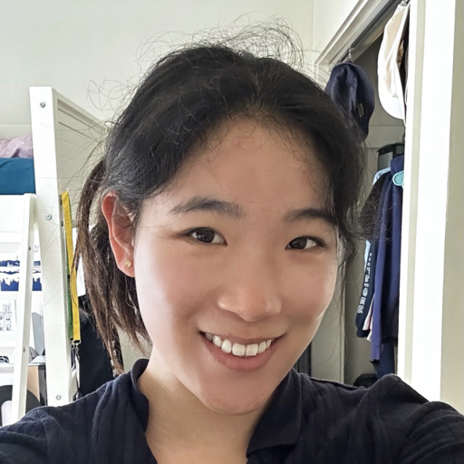
Elaine Shu 她/hers
你好，我的名字是 Elaine！我是计算机科学专业的大二学生，热爱写作和电影摄影。我喜欢徒步、看 chess Twitch 直播和探索旧金山！

Ethan Tam 他/h是
你好！我是 Ethan，来自芝加哥的大二计算机科学学生。当我不学 CS61B 时，我喜欢在 Safeway 购物、关注颁奖季、听 Olivia Rodrigo 和玩《大乱斗》。
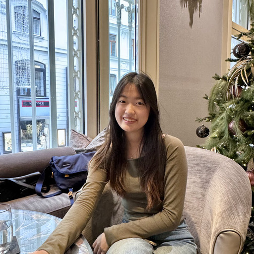
Fiona Chang 她/hers
嗨！我是 Fiona，大三统计 + 数据科学专业，非常兴奋能在这个学期担任辅导员！除了 61B，你会看到我想念我的猫、咖啡馆探店或在家完善我的抹茶拿铁。如果你需要任何帮助，欢迎联系我：）
Hanqi Xiong 他/h是
你好，我是 Hanqi Xiong，大三计算机科学和数据科学专业。业余时间我喜欢玩电子游戏：几何冲刺/刀塔2/皇室战争。如果我们有共同点，请随时联系我！
Ir是 Zhou 她/hers
嗨！我是 Ir是，来自圣何塞的大二计算机科学和天体物理专业。这是第一次担任 61B 辅导员！业余时间，我喜欢咖啡馆探店、滑雪、淘旧货和（试着）自己做抹茶。期待认识大家这学期：）

Jacob Taegon Kim 他/h是
嗨，我是 Jacob！我是大三计算机科学和数据科学专业。业余时间，我喜欢跑步、阅读烹饪书和喝大量咖啡。在我来到伯克利之前，我是一名咖啡师和烘焙师，所以我有很多有趣和独特的经历可以分享！欢迎随时联系我。我的目标是尽我所能支持你：）
Jai Bhatia 他/h是
嗨，我叫 Jai，来自加拿大温哥华的大二计算机科学专业！当我不教 61B 时，我喜欢打曲棍球和吃 Chipotle。我最喜欢的 61B past exam 一定是 2023 年春季期中考试 2，那个相当酷。

Jeffrey Yum 他/h是
嘿大家！我是 Jeff，来自洛杉矶的大三 EECS 专业。我今年的一些愿望清单是去夏威夷和学习一种新乐器。非常兴奋能在这个学期提供帮助！
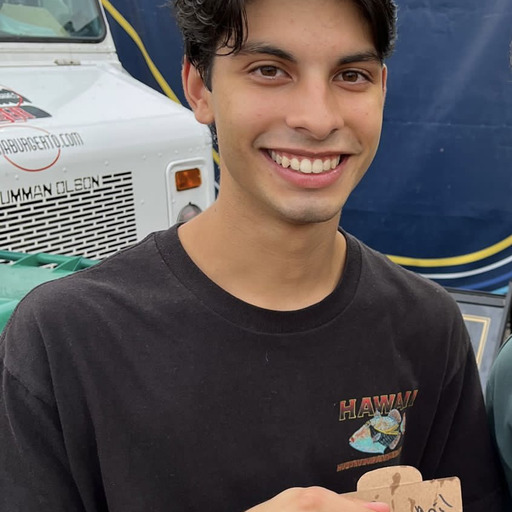
Josh Barua 他/h是
嘿大家！我是 Josh，来自奥斯汀的大三计算机科学专业。当我不写 bug 时，我喜欢室内外排球、在马车上碾压我的室友、看动漫（欢迎推荐）和向人们展示我的 2 只狗的照片。我非常兴奋认识大家这个学期！如果我能以任何方式提供帮助，请随时联系！：）


Lauren Lee 她/hers
嘿！我是 Lauren，来自南湾地区的大四数据科学专业。61B 在我心中占有特殊的位置，所以我非常高兴能与大家分享这份爱。除了 61B，你可以看到我去跑步、弹钢琴、阅读或写作。我是一个超级 Muse 粉丝，非常喜欢学习语言（目前我的愿望清单上的语言之一是辛达林语）。我很高兴和你聊这些话题的任何、全部或 none——归根结底，我只是想了解你。期待一个很棒的学期！
Mohammad Shahnawaz 他/h是
mohammadshahnawaz@berkeley.edu
嗨大家，我的名字是 Mohammad——这是第一次教课，我非常兴奋能认识你们所有人！我在选 61B 时非常喜欢它，希望你也是。业余时间，我看 MMA、玩电子游戏、玩扑克输了，还有享受生活。如果你有任何音乐推荐或只是想聊天，告诉我！

Natalia Grondin 她/hers
嗨，我是 Natalia，我是计算机科学专业的大二学生。我喜欢冲浪、露营和任何户外活动，我非常兴奋这个学期！
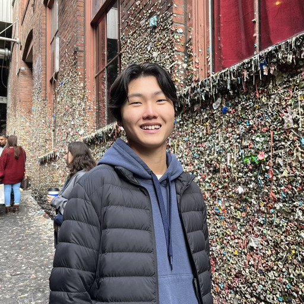
Noah Yin 他/h是
嗨！我是 Noah，来自纽约的大三计算机科学专业，我喜欢网球、动漫、淘旧货、刷 Snackpass 和 61B！！我讨厌臭奶酪、香菜、Tik Tok（实际上我喜欢但它会腐蚀我的大脑）和 宿傩（咒术回战如果你知道的话）。欢迎随时联系我聊任何事情：）

Oliver Petrick 他/h是
嗨！我的名字是 Oliver，但你可以叫我 Ollie。我是计算机科学专业的大三学生，很高兴第一次成为 61B 课程工作人员！课外，我喜欢打篮球、锻炼和尝试新食物。

Philip Ye 他/h是
嘿大家！我是 Philip，大二计算机科学 + 数学专业，是土生土长的佛罗里达人。有一次我在西班牙掉进了一个人形模特展示架，但我尽量不去想它。我的爱好包括幻想自己成为刚培养的爱好的最佳选手和在 YouTube 看恐怖电影解说，这样我可以躲在评论区。期待认识大家！
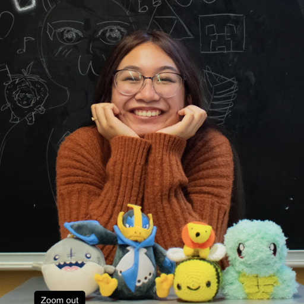
Ryssa Angelica Malibiran 她/hers
嗨嗨~~ 我是 Ryssa，大三数据科学专业。我担任 61B 的 AI 已经 2 个学期了，但这是我的第一个学期担任辅导员！业余时间，我喜欢钩针编织、刷电子游戏攻略/动漫、听 J-pop/K-pop/R&B、制作冲动消费愚蠢零食和在校园的 Intermission 乐队拉小提琴！欢迎随时联系我聊任何事情：D ✨
Shrithan Sandadi 他/h是
嗨大家！我是 Shrithan，来自印第安纳的大二计算机科学专业，这是第一次在课程工作人员中。我是超级印第安纳波利斯小马队和印第安纳步行者队球迷，我一直在寻找新的电影和节目推荐。欢迎随时联系我，我期待一个美好的学期！

Stacey Lei 她/hers
嗨！我是 Stacey，来自拉斯维加斯的大二计算机科学专业。业余时间，我喜欢画插图、游泳和动画。非常兴奋认识大家——欢迎随时联系我！

Suhani Singhal sher/her/hers
嗨！我是大二 EECS 和商业管理专业。61B 之外，我喜欢看喜剧节目和科幻电影、尝试新食谱和听朋友音乐。如果你有任何问题，欢迎联系我！
Terrianne Zhang 她/hers
嗨！我是 Terrianne——计算机科学专业的大二学生。这是第一次在课程工作人员中，我的一些爱好是打羽毛球、电子游戏和探店新奶茶店。我期待与大家一起度过这个学期！

Tiffany Li 她/hers
嗨大家！我的名字是 Tiffany，我是计算机科学专业的大二学生。课外，我喜欢咖啡馆探店、徒步和听音乐会。这个学期非常兴奋认识你们！

Yunze Du 他/h是
嗨，我叫 Yunze！我是来自中国广州的大三计算机科学+经济专业。我喝咖啡和制作（大量）特色咖啡、弹吉他、听 C-R&B/新灵魂乐和蓝调摇滚类型音乐。和我聊哈希表、最小生成树和堆，但也可以聊手冲咖啡、机械键盘和演唱会票！！
学术实习生
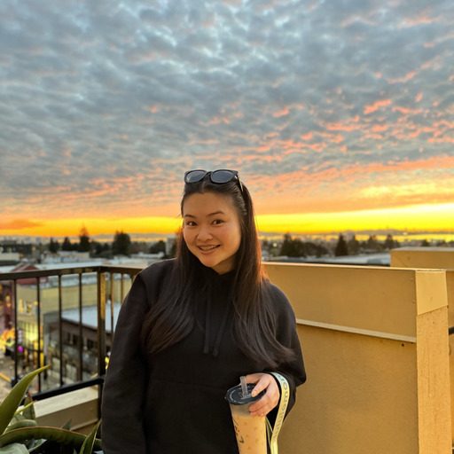
Angela Li 她
嗨！我是 Angela，我是来自旧金山的大二商业和计算机科学专业学生。我喜欢抹茶、CANES 和总的来说食物。我以嗜睡如命著称🦥
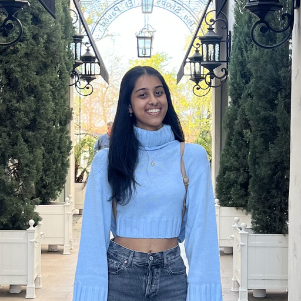
Anokhi Shah 她/hers
嘿大家！我是 Anokhi，伯克利的大二 EECS 专业学生。我来自湾区，我喜欢舞蹈、旅行、摄影，最重要的是在伯克利周围尝试新美食。这个学期非常高兴能担任 61B 的 AI，期待认识大家！
Carolina Ternero 她
嗨大家💗！我的名字是 Carolina，我是大二认知科学和语言学专业！我喜欢徒步、玩独立游戏（目前痴迷于《空洞骑士》）和拼图！！CS61B 是我最喜欢的课程，非常兴奋认识大家并提供帮助！！：）
Daniel Wang 他/h是
嘿大家！我是 Daniel，我是来自圣地亚哥的大二计算机科学专业！我对平面设计、友好的超级大乱斗、MEDIAST 168、品茶和许多其他有趣的事情非常感兴趣——期待认识大家！！

Emily Mesta 她/ella
嗨！我的名字是 Emily，我来自南加州的大二计算机科学专业。61B 之外，我喜欢徒步、跳舞和在 El Talpense 吃饭（我推荐）！非常兴奋认识大家：P

Hiral Patel She/her/hers
嗨！我的名字是 Hiral，我是大二数据科学专业！业余时间我喜欢跳舞、看电影和在伯克利周围尝试新食物！这是我第一次担任 AI，非常期待在实验课上认识大家：）


Nazar Ospanov 他/h是
嘿嘿！我的名字是 Nazar，我是一名来自哈萨克斯坦阿拉木图的大二学生。每当我不忙的时候，我喜欢探索湾区户外景点、喝一些好抹茶和弹吉他。这个学期非常兴奋！

Ozan Ozturk He/Him/H是
嗨！我的名字是 Ozan，我是大二计算机科学和经济学专业。我来自旧金山，从小在北加州各地打网球。业余时间，我喜欢去健身房、打扑克和与朋友闲逛。我期待在 CS61B 度过一个美好的学期！

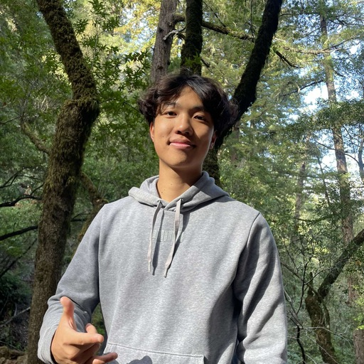
Ridge Huang 他/h是
嘿大家，我的名字是 Ridge，我是一名大二数据科学专业。课外，我在加州大学伯克利分校打飞盘、喜欢锻炼，还是一个超级美食爱好者！
Shreya Mantripragada 她
嗨！我的名字是 Shreya，我是一名大二计算机科学和数据科学双专业！我在选这门课时非常喜欢 CS 61B，非常兴奋能在这个学期担任 AI。业余时间，我非常喜欢徒步、写日记和寻找校园里舒适的新学习地点（我最喜欢的是 Morrison Library 和 Yall是）。如果你有任何问题，欢迎联系我！